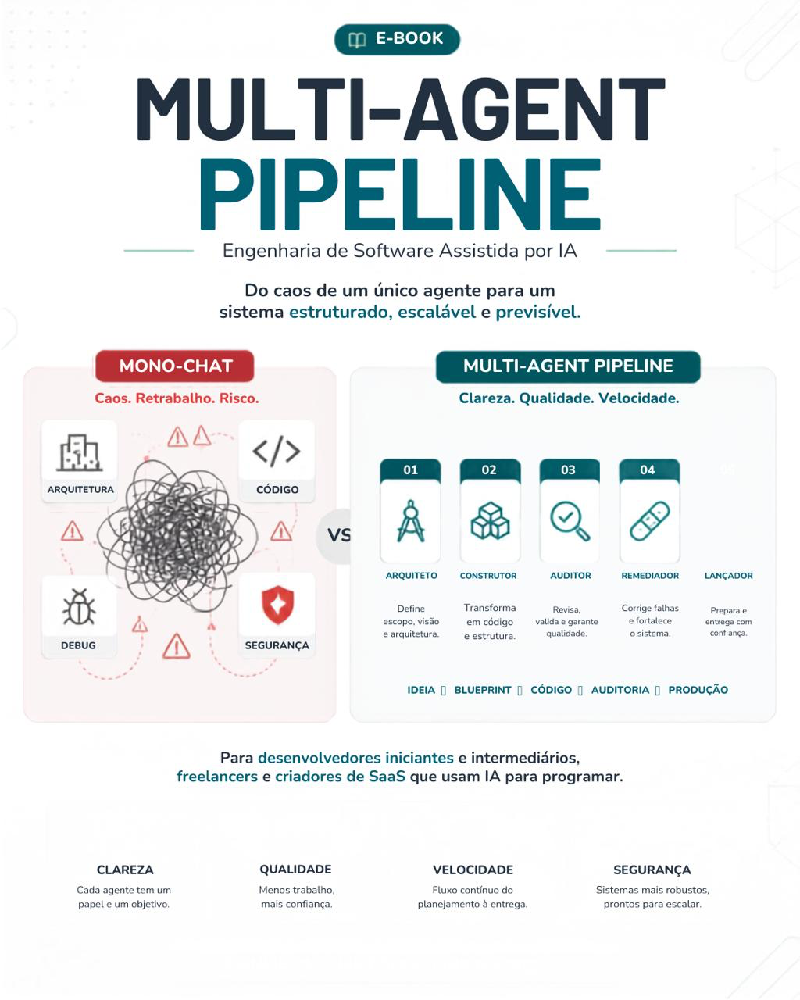

“Mas isso já estava combinado.”
Uma decisão importante se perde entre mensagens e versões anteriores.
E-BOOK ENGENHARIA DE SOFTWARE COM IA
Transforme conversas soltas em um processo de desenvolvimento com escopo, contexto e responsabilidades claras.
Conheça o Multi-Agent Pipeline: cinco papéis para planejar, construir, revisar, corrigir e preparar seu software para produção.
Quero conhecer o e-book
Uma responsabilidade por etapa.
Um próximo passo definido.
01 / O PROBLEMA
Planejamento, código antigo, erros e novas ideias passam a disputar o mesmo espaço. Recuperar o que foi decidido vira parte do trabalho.
Uma decisão importante se perde entre mensagens e versões anteriores.
Sem limites claros, um ajuste local pode alterar partes que já funcionavam.
Faltam critérios para revisar, corrigir e preparar a entrega.
02 / O MÉTODO
Cada etapa recebe contexto, produz um artefato e tem um critério de conclusão. Você mantém o controle das decisões.
Define escopo, estrutura e critérios de aceite.
BLUEPRINTTransforma o plano em código, em etapas delimitadas.
IMPLEMENTAÇÃORevisa o resultado e documenta riscos e achados.
RELATÓRIOCorrige os problemas identificados e registra evidências.
CORREÇÕESPrepara documentação, ambiente e passagem para produção.
ENTREGAVários chats só fazem sentido quando as responsabilidades e as passagens entre eles estão definidas.
03 / POR DENTRO DO LIVRO
Um guia técnico e operacional sobre escopo, contexto, especialização e handoffs no desenvolvimento com IA.
Entenda a perda de contexto e aprenda a dividir tarefas, usar Git e definir checkpoints.
Estruture os cinco papéis e use os prompts mestres e a instrução operacional do Remediador.
Transfira decisões entre etapas e explore casos como landing pages, CRUDs, dashboards e micro-SaaS.
Reconheça quando a IA perde o contexto, recupere o trabalho e adapte o pipeline sem perder seus controles.
Do conceito para a prática. O manuscrito também inclui glossário, templates, checklist de execução e uma rota prática de aplicação em sete dias.
PARA QUEM É
Desenvolvedores iniciantes e intermediários, freelancers, devs solo e criadores de pequenos SaaS.
Você precisa de familiaridade básica com HTML, CSS, JavaScript e GitHub. O livro aborda a organização do desenvolvimento; não substitui uma formação básica em programação.
04 / SEU PRÓXIMO PASSO
Use o Multi-Agent Pipeline como referência para organizar o trabalho, documentar decisões e verificar o que a IA entrega.
Engenharia de Software Assistida por IA
Pagamento único · E-book em PDF
Pagamento e acesso ao material pela Cakto. Confira o valor final e as condições no checkout.
ANTES DE COMEÇAR
Sim. O material pressupõe familiaridade básica com HTML, CSS, JavaScript e GitHub. Ele ajuda a organizar o trabalho com IA, mas não ensina programação do zero.
São cinco papéis de trabalho. O foco é definir responsabilidades, contexto e critérios de conclusão para cada etapa, não obrigar você a contratar cinco ferramentas.
É uma passagem documentada entre etapas: o que foi feito, quais decisões estão valendo, quais arquivos importam, quais pendências existem e o que a próxima etapa deve fazer.
Não. O método organiza revisão, rastreabilidade e verificação. Testes, análise de segurança e decisões humanas continuam necessários em cada projeto.
Esta oferta é de um e-book em PDF. Aulas em vídeo, consultoria e acompanhamento individual não estão incluídos.
Ele prepara documentação, ambiente e passagem para produção. Esse papel não trata de campanhas, marketing ou aquisição de clientes.